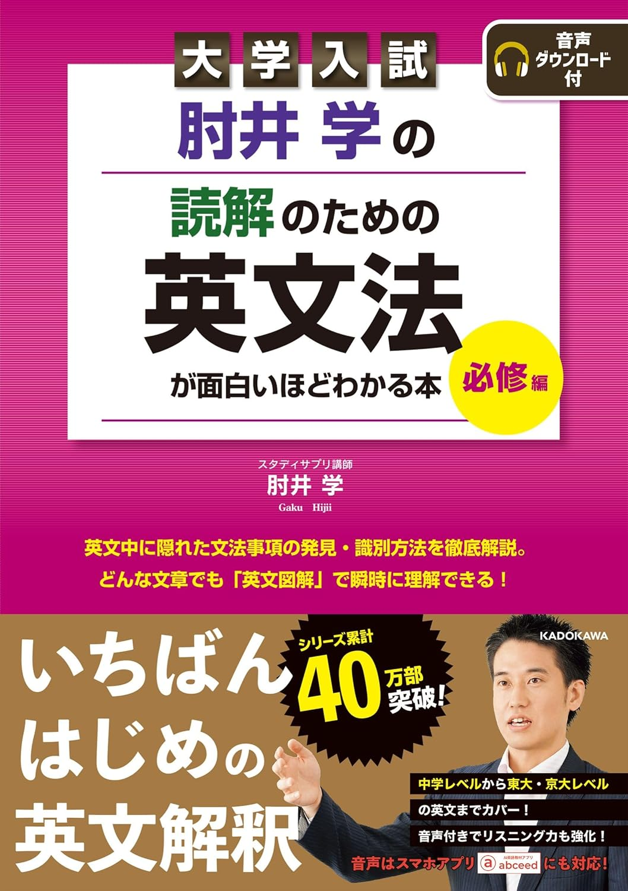

← ポータルに戻る
読解のための英文法が面白いほどわかる本
全303ページ

はじめに・目次
p.1–10
序章: SVの発見編
p.11–24
▶
1
テーマ 01(1) SVの発見
p.12
2
テーマ 01(2) SVの発見
p.18
第1章: 意味のカタマリ編
p.25–62
▶
3
テーマ 02 名詞句
p.26
4
テーマ 03 名詞節
p.32
5
テーマ 04 形容詞句
p.38
6
テーマ 05 形容詞節
p.44
7
テーマ 06 副詞句
p.48
8
テーマ 07 副詞節
p.52
第2章: 識別編
p.63–104
▶
9
テーマ 08 to do の識別
p.64
10
テーマ 09 -ing の識別
p.70
11
テーマ 10 過去分詞の識別
p.76
12
テーマ 11 that の識別
p.80
13
テーマ 12 it の識別
p.92
14
テーマ 13 as の識別
p.98
第3章: 構文編
p.105–156
▶
15
テーマ 14 接続詞
p.106
16
テーマ 15 倒置
p.110
17
テーマ 16 省略
p.118
18
テーマ 17 強調構文
p.122
19
テーマ 18 呼応
p.126
20
テーマ 19 ネクサス
p.130
21
テーマ 20 挿入
p.136
22
テーマ 21 比較
p.142
23
テーマ 22 複合関係詞
p.152
第4章: 動詞の型編
p.157–224
▶
24
テーマ 23-25 第4・第5文型
p.158
25
テーマ 26-32 イディオム型
p.176
26
テーマ 33 受動態
p.206
解答・解説編
p.225–303
▶
1
解答: テーマ 01(1) SVの発見
p.226
2
解答: テーマ 01(2) SVの発見
p.226
3
解答: テーマ 02 名詞句
p.230
4
解答: テーマ 03 名詞節
p.230
5
解答: テーマ 04 形容詞句
p.230
6
解答: テーマ 05 形容詞節
p.230
7
解答: テーマ 06 副詞句
p.230
8
解答: テーマ 07 副詞節
p.230
9
解答: テーマ 08 to do の識別
p.244
10
解答: テーマ 09 -ing の識別
p.244
11
解答: テーマ 10 過去分詞の識別
p.244
12
解答: テーマ 11 that の識別
p.244
13
解答: テーマ 12 it の識別
p.244
14
解答: テーマ 13 as の識別
p.244
15
解答: テーマ 14 接続詞
p.258
16
解答: テーマ 15 倒置
p.258
17
解答: テーマ 16 省略
p.258
18
解答: テーマ 17 強調構文
p.258
19
解答: テーマ 18 呼応
p.258
20
解答: テーマ 19 ネクサス
p.258
21
解答: テーマ 20 挿入
p.258
22
解答: テーマ 21 比較
p.258
23
解答: テーマ 22 複合関係詞
p.258
24
解答: テーマ 23-25 第4・第5文型
p.280
25
解答: テーマ 26-32 イディオム型
p.280
26
解答: テーマ 33 受動態
p.300